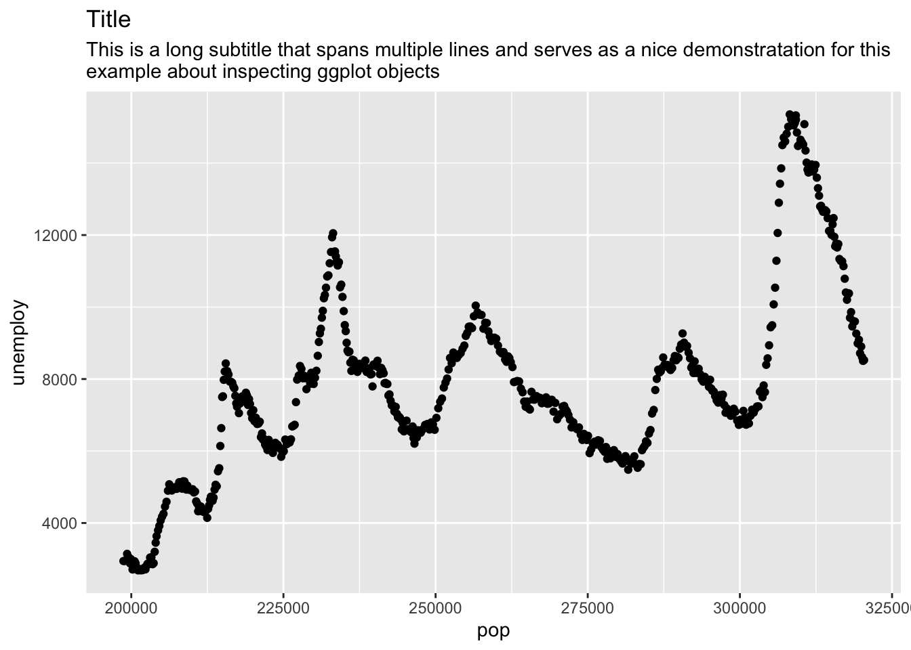

After creating a ggplot2 object, it can be useful to inspect the object created, for example, to change the behaviour of functions using that object, or for writing unit tests. Searching through the documentation index reveals no help, and printing the name of the plot to the console just calls the default print method, re-printing the plot.
3.2 What is an example?
Let’s create and print a plot with a long subtitle that spans multiple lines:
library(ggplot2)example <-ggplot(economics, aes(x = pop, y = unemploy)) +geom_point() +labs(title ="Title",subtitle =paste0("This is a long subtitle that spans multiple lines and serves as a nice demonstratation for this","\n","example about inspecting ggplot objects" ) )example

Now, we want to write a wrapper function to ggsave() that changes the height parameter of the output plot, depending on whether a multiline subtitle has been detected.
3.3 What is a solution?
Internally, a ggplot object is just stored as a list, and can be inspected with str() like most objects:
typeof(example)
[1] "list"
str(example)
List of 9
$ data : spc_tbl_ [574 × 6] (S3: spec_tbl_df/tbl_df/tbl/data.frame)
..$ date : Date[1:574], format: "1967-07-01" "1967-08-01" ...
..$ pce : num [1:574] 507 510 516 512 517 ...
..$ pop : num [1:574] 198712 198911 199113 199311 199498 ...
..$ psavert : num [1:574] 12.6 12.6 11.9 12.9 12.8 11.8 11.7 12.3 11.7 12.3 ...
..$ uempmed : num [1:574] 4.5 4.7 4.6 4.9 4.7 4.8 5.1 4.5 4.1 4.6 ...
..$ unemploy: num [1:574] 2944 2945 2958 3143 3066 ...
$ layers :List of 1
..$ :Classes 'LayerInstance', 'Layer', 'ggproto', 'gg' <ggproto object: Class LayerInstance, Layer, gg>
aes_params: list
compute_aesthetics: function
compute_geom_1: function
compute_geom_2: function
compute_position: function
compute_statistic: function
computed_geom_params: list
computed_mapping: uneval
computed_stat_params: list
constructor: call
data: waiver
draw_geom: function
finish_statistics: function
geom: <ggproto object: Class GeomPoint, Geom, gg>
aesthetics: function
default_aes: uneval
draw_group: function
draw_key: function
draw_layer: function
draw_panel: function
extra_params: na.rm
handle_na: function
non_missing_aes: size shape colour
optional_aes:
parameters: function
rename_size: FALSE
required_aes: x y
setup_data: function
setup_params: function
use_defaults: function
super: <ggproto object: Class Geom, gg>
geom_params: list
inherit.aes: TRUE
layer_data: function
map_statistic: function
mapping: NULL
position: <ggproto object: Class PositionIdentity, Position, gg>
compute_layer: function
compute_panel: function
required_aes:
setup_data: function
setup_params: function
super: <ggproto object: Class Position, gg>
print: function
setup_layer: function
show.legend: NA
stat: <ggproto object: Class StatIdentity, Stat, gg>
aesthetics: function
compute_group: function
compute_layer: function
compute_panel: function
default_aes: uneval
dropped_aes:
extra_params: na.rm
finish_layer: function
non_missing_aes:
optional_aes:
parameters: function
required_aes:
retransform: TRUE
setup_data: function
setup_params: function
super: <ggproto object: Class Stat, gg>
stat_params: list
super: <ggproto object: Class Layer, gg>
$ scales :Classes 'ScalesList', 'ggproto', 'gg' <ggproto object: Class ScalesList, gg>
add: function
clone: function
find: function
get_scales: function
has_scale: function
input: function
n: function
non_position_scales: function
scales: list
super: <ggproto object: Class ScalesList, gg>
$ mapping :List of 2
..$ x: language ~pop
.. ..- attr(*, ".Environment")=<environment: R_GlobalEnv>
..$ y: language ~unemploy
.. ..- attr(*, ".Environment")=<environment: R_GlobalEnv>
..- attr(*, "class")= chr "uneval"
$ theme : list()
$ coordinates:Classes 'CoordCartesian', 'Coord', 'ggproto', 'gg' <ggproto object: Class CoordCartesian, Coord, gg>
aspect: function
backtransform_range: function
clip: on
default: TRUE
distance: function
expand: TRUE
is_free: function
is_linear: function
labels: function
limits: list
modify_scales: function
range: function
render_axis_h: function
render_axis_v: function
render_bg: function
render_fg: function
setup_data: function
setup_layout: function
setup_panel_guides: function
setup_panel_params: function
setup_params: function
train_panel_guides: function
transform: function
super: <ggproto object: Class CoordCartesian, Coord, gg>
$ facet :Classes 'FacetNull', 'Facet', 'ggproto', 'gg' <ggproto object: Class FacetNull, Facet, gg>
compute_layout: function
draw_back: function
draw_front: function
draw_labels: function
draw_panels: function
finish_data: function
init_scales: function
map_data: function
params: list
setup_data: function
setup_params: function
shrink: TRUE
train_scales: function
vars: function
super: <ggproto object: Class FacetNull, Facet, gg>
$ plot_env :<environment: R_GlobalEnv>
$ labels :List of 4
..$ title : chr "Title"
..$ subtitle: chr "This is a long subtitle that spans multiple lines and serves as a nice demonstratation for this\nexample about "| __truncated__
..$ x : chr "pop"
..$ y : chr "unemploy"
- attr(*, "class")= chr [1:2] "gg" "ggplot"
Here, we can see and access all the elements that make up the plot (e.g., scales, data, etc.). The subtitle can be accessed like so:
subtitle <- example$labels$subtitle
We could then write a wrapper function to detect whether our subtitle is multiline and change the height of ggsave() accordingly:
ggplot2 provides a set of functions to render plot objects, which can also be used to inspect the underlying data and panel object. These functions do not appear in the documentation index however, and so are not easily discoverable. For a deeper diver on these functions and the internals of ggplot objects, see this chapter in the book “ggplot2: Elegant Graphics for Data Analysis (3e)”.